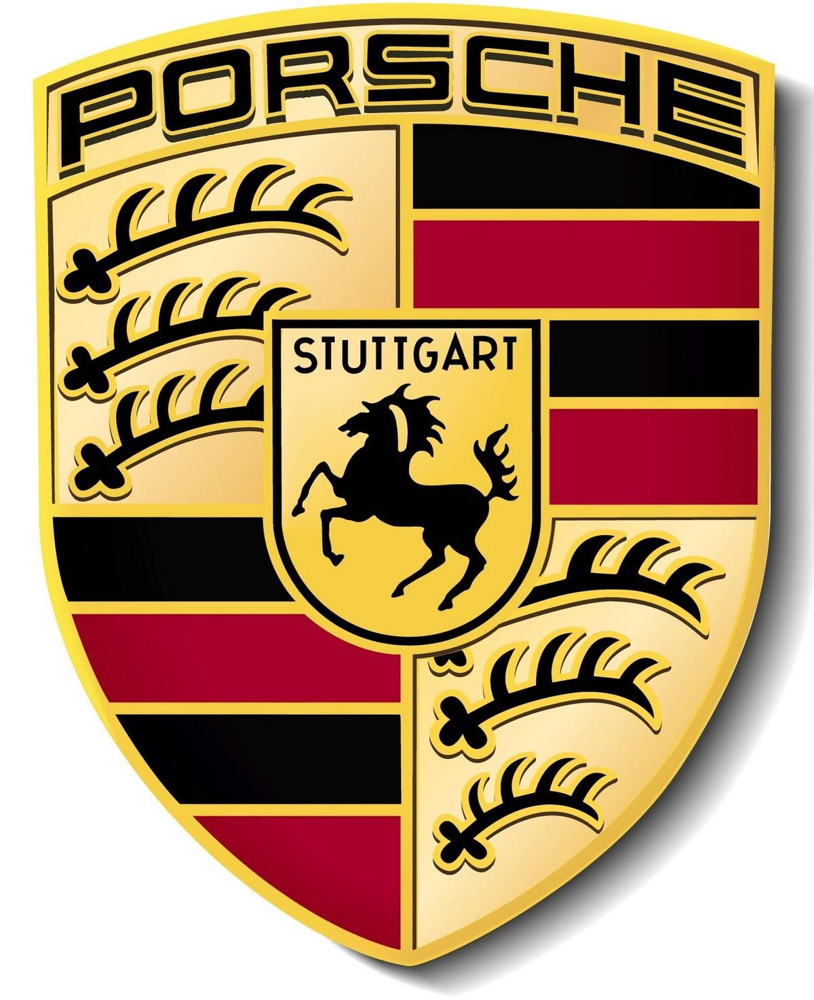
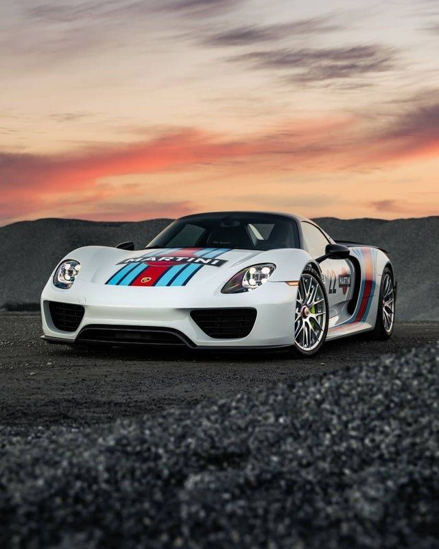
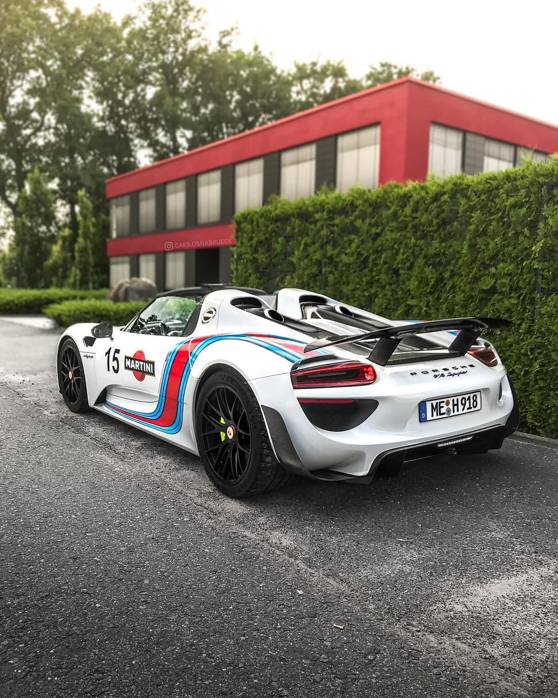

Porsche 918 Spyder

The Porsche 918 Spyder is a plug-in hybrid supercar produced from 2013–2015. It combined a 4.6L V8 engine with two electric motors, making it one of the fastest and most advanced cars of its era.
Performance and specs
| Specification |
detail |
| Engine |
4.6L Naturally Aspirated V8 + 2 Electric Motors |
| Power out |
887hp |
| 0-100km/h |
2.6 seconds |
| Top speed |
345 km/h |
| Transmission |
7-speed PDK |
| Drive type |
All wheel drive |
Hybrid technology
- Regenerative braking
- Plug-in hybrid mode (can drive 30 km on electric only)
- Carbon-fiber monocoque chassis for light weight
- Battery pack behind seats for perfect balance
Design & Aerodynamics
- Active aerodynamics (spoiler moves automatically)
- Lightweight carbon fiber body
- Interior inspired by race cars
- Interior (digital dashboard, futuristic controls)
- Rear view (exhausts on top!)
Legacy and competitors
The Porsche 918 Spyder was part of a legendary trio of hybrid hypercars that redefined performance in the 2010s — often called the “Holy Trinity of Hybrid Hypercars".
These three cars — the Porsche 918 Spyder, McLaren P1, and Ferrari LaFerrari — were released around the same time (2013–2015). Each used hybrid technology not just for efficiency, but to boost performance to new levels.
- Porsche 918 Spyder: Focused on all-wheel drive traction, advanced hybrid tech, and track-ready handling.
- McLaren P1: Combined electric boost with a twin-turbo V8 for extreme power and sharp aerodynamics.
- Ferrari LaFerrari: Used a hybrid system to enhance its V12 engine, blending classic Ferrari emotion with future tech.
Fun Facts
- The Porsche 918 Spyder set a Nürburgring lap record of 6 minutes 57 seconds in 2013.
- Each 918 Spyder was hand-built at Porsche’s factory in Stuttgart, Germany.
- It can drive silently on electric power or roar like a race car when the V8 engine starts.
Conclusion
The Porsche 918 Spyder is more than just a supercar. It connects traditional high-performance cars with the new world of hybrid and electric technology.
It proved that speed and sustainability can work together.
Even today, it inspires modern Porsche models and remains one of the most important cars ever made by Porsche.
|  |
 |
 |
for more info visit Top gear...